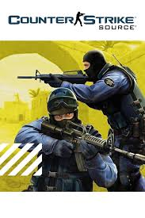
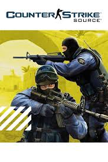

Flexbox
Valve's most popular games
Counter-Strike
Counter-Strike (CS) is a series of multiplayer tactical first-person shooter video games in which teams of terrorists battle to perpetrate an act of terror (bombing, hostage-taking, assassination) while counter-terrorists try to prevent it (bomb defusal, hostage rescue, escort mission). The series began on Windows in 1999 with the release of the first game, Counter-Strike. It was initially released as a modification ("mod") for Half-Life that was designed by Minh "Gooseman" Le and Jess "Cliffe" Cliffe before the rights to the mod's intellectual property were acquired by Valve, the developers of Half-Life, who then turned Counter-Strike into a retail product released in 2000.

 

Made using flexbox